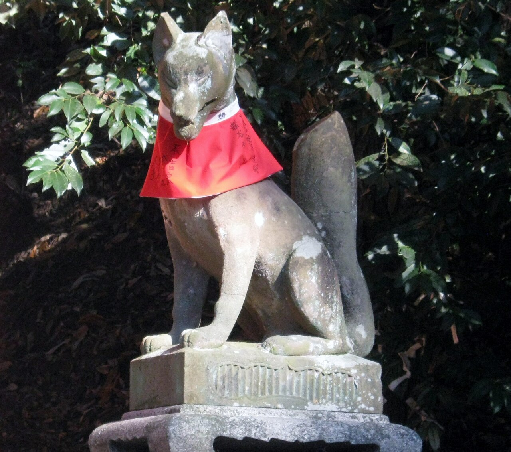
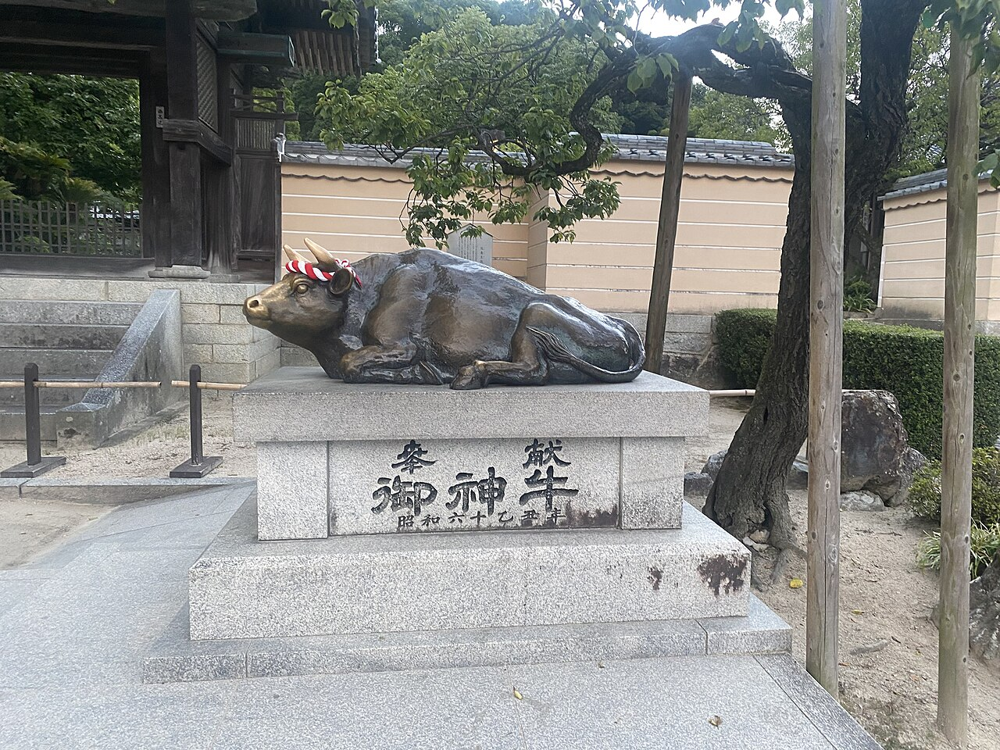

先選一位神，再找祂的神社
日本各地的神社祭祀著不同的神明。這個網站從三位神祇出發：八幡神、稻荷神、天神。點進一位神，可以看到祂是誰、信仰從哪裡來，以及各地區祭祀祂的神社。


八幡神
被源氏武士奉為守護神的軍神，全國八幡宮的祭神
已收錄 1 間神社
照片：作者不詳／公有領域／Wikimedia Commons

稻荷神
掌管穀物與食物的神，後來也被工商業界奉為象徵財富的神
已收錄 1 間神社
照片：Hyppolyte de Saint-Rambert／CC BY-SA 4.0／Wikimedia Commons
天神（菅原道真）
由平安時代學者菅原道真成神而來，被尊為學問之神
已收錄 1 間神社
照片：Immanuelle／CC BY 4.0／Wikimedia Commons更多神祇
持續更新中…
關於這個網站
這個網站用「LLM Wiki」的方式維護，分成三層：使用者把蒐集到的中文資料放進 raw/；AI 依照 AGENTS.md 的規則，把資料整理成 wiki/，每一句都標上來源；使用者確認 wiki 之後，AI 才照模板產生網頁。
所以要新增一位神祇或一間神社，只要放入資料，再對 AI 說「請先讀 AGENTS.md，新增○○」，它就會照同一套格式完成。
- AGENTS.md：給 AI 的規則
- DECISIONS.md：製作過程的決策紀錄
- raw/：原始資料
- wiki/：AI 整理的內容（含目錄與工作紀錄）
- GitHub repository：完整專案